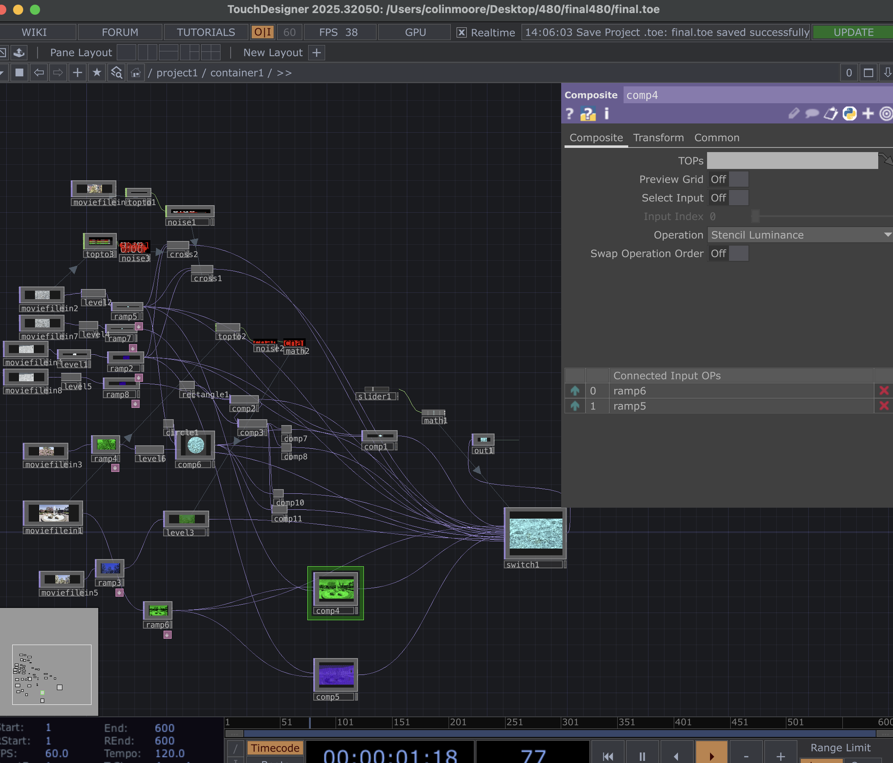
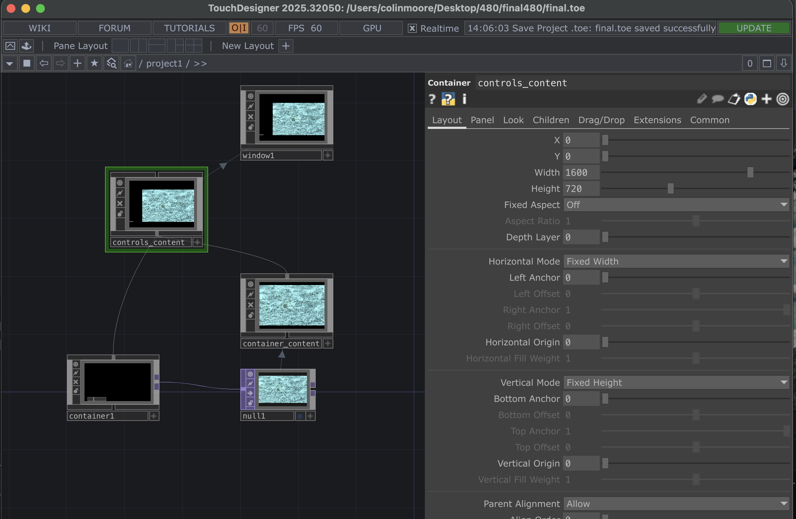

Nature
Concept & Intent
For this assignment,I needed to create a project designed for a wood panel surface, either using live input or a live-controlled visual system. us, pow live-controlled by you. I chose the second option by creating a visually driven composition controlled by a slider that switches between different visual states.
Process of Creating this Exercise
The main TouchDesigner components I used were Ramp TOPs, Movie File In TOPs, Level TOPs, and Composite TOPs. Inside Container 1, I used a total of 8 Movie File In TOPs, 6 Level TOPs, 11 Composite TOPs, 8 Ramp TOPs, 2 Cross TOPs, 1 Rectangle TOP, 1 Circle TOP, 1 Switch TOP, and 1 Out TOP. For CHOPs, I used 3 Top to CHOPs, 3 Noise CHOPs, and 2 Math CHOPs. I also included 1 slider inside Container 1. Outside of Container 1, at the project’s top level, I used 3 containers, 1 Null TOP, and 1 Window COMP.
- I began by setting up the top-level layout with three containers. I ensured that Container 1 included an Out TOP so it could connect to a Null TOP at the top level. Then, I connected the three containers similarly to how I structured my Control Blue assignment.
-
Inside Container 1, I started by adding the Movie File In TOPs. I initially added six and later
included two more to adjust playback speeds.
Moviefilein1 contains a water fountain. Moviefilein2 and Moviefilein7 show fast-moving water. Moviefilein3 shows a pink tree swaying. Moviefilein4 and Moviefilein8 show slow-moving water. Moviefilein5 shows a white tree swaying, and Moviefilein6 shows a yellow-orange tree swaying.
I set the playback speed of Moviefilein7 to 0.707 and Moviefilein8 to 0.548. -
Moviefilein2, Moviefilein7, Moviefilein4, and Moviefilein8 were each connected to Level TOPs.The
first two had a contrast of 1.87, while the latter two had a contrast of 1.41. These Level TOPs
were then connected to Ramp TOPs.
The first pair used a ramp color of r(0.688) g(1) b(1) a(1), while the second pair usedr(0.192)g(0)b(0.616)a(1).
I combined the fast and slow water visuals using Cross TOPs. Moviefilein6 was sent into a Top to CHOP,then into a Noise CHOP (amplitude 3.56), which referenced Cross 1. Moviefilein2 followed a similar process and referenced Cross 2.
Both Cross TOPs were connected to a Switch TOP controlled by a slider. The slider output was processed through a Math CHOP to remap its range from 0–1 to 0–20. -
The ramps from Moviefilein7 and Moviefilein8 were composited using the "Stencil Luminance"
operation.These were then combined with a Rectangle TOP using an "Atop" operation.
I created a second variation with reversed layering (slow first, fast second), and both variations were routed into the Switch TOP.
Moviefilein2 was also processed through a Level and Ramp TOP, then composited with a Circle TOP using an "Atop" operation. This output was further combined using multiple Composite TOPs with operations such as Atop, Multiply, Burn Color, and Glow, all routed into the Switch. -
Moviefilein3 was processed through a green ramp (r(0) g(1) b(0) a(1)) and a Level TOP before
being sent to the Switch.
Moviefilein5 was processed through a ramp (r(0.3) g(0.4) b(0.899) a(1)) and then into a Level TOP.Moviefilein1 was converted to CHOP data, passed through Noise and Math CHOPs (range remapped from 0–1 to 0–10), and used to modulate the blue channel in the Level TOP.
Moviefilein1 was also processed through a green ramp (r(0) g(0.873) b(0) a(1)) and composited with water visuals using "Stencil Luminance." These outputs were also sent into the Switch TOP, which connects to the final Out TOP. -
At the top level, Container 1 connects to a Null TOP. This Null TOP is referenced by another
container named "container_content." Both Container 1 and container_content are connected to a
third container called "controls_content."
The controls_content container includes a Window COMP for display output. Finally, I adjusted layout properties such as width and height for proper presentation.
Process & Results
TouchDesigner Network

TouchDesigner Container network flow for final project exercise
TouchDesigner Network

TouchDesigner showing the upper level of the container showing how the container1 elements is displayed on a window